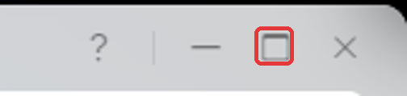

Every click is written down, with pictures. No experience needed.
No commands to type
Nothing to download or open on your computer
You copy one block of settings and paste it into your NAS
Time: about 15 minutesYou need: a UGREEN NAS and a computer on the same home networkOther makes:see here
?
Words you'll see
Skip this if you already know them.
NAS
Your network storage box, for example a UGREEN DXP2800.
UGOS
What you see when you log in to a UGREEN NAS in a web browser. It looks like a computer desktop.
Docker
An app on your NAS that runs other apps (like Jellyfin, Plex, or this panel) in sealed boxes, so they can't mess up the NAS.
Container
One app running inside Docker.
Project
A small group of containers set up together from one block of settings.
Settings
A short block of text that tells Docker what to download and how to run it. You never open it with a program; you copy it from this page and paste it into Docker.
IP address
Your NAS's number on your home network, for example 192.168.1.50.
Port
A number on the end of an address after a colon, like :8090. It picks which app on the NAS you're talking to.
Copy, paste
Copy is Ctrl + C, paste is Ctrl + V: hold Ctrl (bottom-left of the keyboard), tap the letter, let go. On a Mac use Cmd instead of Ctrl.
1
Log in and find your NAS's address
You'll type this address in Part 8 to open the panel.
Tip: keep this guide open in its own browser tab the whole time. You'll switch between this guide and your NAS by clicking the tabs at the top of your browser.
Open your web browser (Chrome, Edge, Firefox or Safari) and log in to your NAS the way you normally do. You'll see the UGOS desktop, with icons down the left-hand side.
Only ever used the UGREEN app on your PC? The desktop inside it is the same, so follow along in there.
Double-click Control Panel.
In the list on the left, click Network.
Click the Network connection tab at the top.
Next to LAN1 (Connected) you'll see something like (192.168.1.50 / DHCP). The numbers before the / are your IP address. Write them down.
The address is blurred here for privacy. Yours will show real numbers.
Close Control Panel with the ✕ in its top-right corner. Don't change anything here.
2
Check Docker is installed
Look at the icons on your UGOS desktop. Is there a blue whale called Docker (②)?
Yes: skip to Part 3. No: install it:
Double-click App Center (①).
Click in the Search box at the top-left, type Docker and press Enter.
Click Install next to Docker. (In the picture it says Open because Docker is already installed there.)
Wait for it to finish (a minute or two). If it asks which drive or "volume" to use, keep the one it suggests and click Confirm.
Close App Center with the ✕.
3
Start a new project in Docker
A "project" is how Docker installs an app. You'll give it a name and a folder now, and its settings in Part 4.
Go to your NAS's tab and double-click Docker on the UGOS desktop.
Optional: to make the Docker window fill the screen, click its maximise button. That's the small square ☐ at the window's top-right corner, between the – (minimise) and ✕ (close) buttons:

In Docker's left-hand menu click Project, then the blue Create button.
Click in the Name box and type nas-panel
Now choose the folder where the panel keeps its settings:
Click the small folder icon at the right-hand end of the Storage path box.
Click the folder called docker (①), then Create folder (②).
A box appears with the words Create folder in it. Press Backspace until it's empty, type nas-panel and click Confirm.
Click the small ▸ arrow next to docker, click your new nas-panel folder, then Confirm at the bottom.
The Storage path box now says something like Shared folder/docker/nas-panel.
Leave this Docker window open. You'll fill in the big empty box next.
4
Copy the settings into Docker
The big empty box under Compose configuration needs a list of instructions telling Docker what to download and how to run it. We've written that list for you. You just copy it from this page and paste it into that box.
Copy: on this guide page, click the blue button below. It turns green when the list is copied.
Click it once.
Show me what I'm copying
# =====================================================================
# NAS Control Panel - settings file
# UGREEN NAS: this works as it is. Only check the lines marked <-- CHECK
# Step-by-step guide: https://github.com/ibiddle/nas-panel/blob/main/docs/INSTALL.md
# =====================================================================
services:
nas-panel:
image: ghcr.io/ibiddle/nas-panel:latest
container_name: nas-panel
restart: unless-stopped
ports:
- "8090:8090"
environment:
TZ: Europe/London # <-- CHECK: your time zone (UK = Europe/London)
PUID: "1000" # <-- CHECK: first number shown above the box (PUID=...)
PGID: "10" # <-- CHECK: second number shown above the box (PGID=...)
APPS_DIRS: /volume1/docker # folder your Docker apps are in (UGREEN: leave as it is)
# NAS_UI_URL: http://192.168.1.10:9999 # optional: link to your NAS admin page
security_opt:
- no-new-privileges:true
volumes:
- /var/run/docker.sock:/var/run/docker.sock
- /volume1/docker:/volume1/docker # must be the same as APPS_DIRS, on both sides
- ./data:/data
- /proc/1/mounts:/host/mounts:ro
updater: # auto-update every night - delete this section to turn it off
image: ghcr.io/ibiddle/nas-panel:latest
container_name: nas-panel-updater
restart: unless-stopped
entrypoint: ["/updater.sh"]
environment:
TZ: Europe/London # <-- CHECK: same time zone as above
UPDATE_TIME: "04:00" # time to check for updates (24-hour clock)
volumes:
- /var/run/docker.sock:/var/run/docker.sock
- /volume1/docker:/volume1/docker:ro
The button didn't work?
Click Show me what I'm copying above, then click inside the text that appears.
Press Ctrl + A to select it all, then Ctrl + C to copy.
Switch: click your NAS's tab at the very top of your browser, to go back to the Docker window from Part 3.
Paste: click once inside the big empty box under Compose configuration, then press Ctrl + V. About 40 lines of text appear.
Nothing appeared? Go back to this guide tab, click Copy settings again, then switch back and paste.
5
Check three lines
Usually nothing needs changing.
Look at the grey text just above the big box (①). It says something like PUID=1000 PGID=10.
Look at lines 14, 15 and 16 in the box (②), the ones ending in <-- CHECK.
Compare them:
Line
Leave it if…
Otherwise…
TZ: Europe/London
you're in the UK
change Europe/London to your area, e.g. Europe/Paris or America/New_York (full list, "TZ identifier" column)
PUID: "1000"
the grey text says PUID=1000
change 1000 to the PUID number in the grey text
PGID: "10"
the grey text says PGID=10
change 10 to the PGID number in the grey text
If you changed the time zone, scroll down the box and change the second TZ line (line 33) to match.
To change a value: double-click it (for example 1000) so it's highlighted, then type the new one. Keep the quote marks " ".
Don't change anything else. Don't add or remove spaces at the start of lines. The spaces matter.
6
Start it
At the bottom, make sure Run immediately after creation is ticked, then click Deploy.
Wait 1–2 minutes while your NAS downloads the panel.
Click Container in Docker's left-hand menu. You'll see two new entries, both with a green Running label:
nas-panel is the control panel. nas-panel-updater keeps it up to date every night; you never need to touch it.
A red error instead? The paste probably went wrong. Go to Project, click ··· next to nas-panel → Delete, and start again from Part 3. Your NAS isn't harmed.
7
Get your one-time setup code
This proves you're the owner when you open the panel for the first time.
In Container, click the namenas-panel (the words, not the switch).
Click the Log tab at the top (①).
Near the top of the black box, look for:
==================================================
NAS PANEL SETUP CODE: 4F7A19C2
Open http://<your-NAS-IP>:8090 and enter this code
==================================================
Write down the 8 letters and numbers after SETUP CODE:. Yours will be different.
Can't see it? Click Search (②), type SETUP and press Enter.
8
Open the panel and choose your password
Open a new browser tab: press Ctrl + T.
Type http://, then your IP address from Part 1, then :8090, and press Enter.
Example: if your IP address is 192.168.1.50, type http://192.168.1.50:8090
Type the setup code from Part 7.
Choose a password of at least 8 characters, type it twice, and click Create password. Write the password down somewhere safe.
You're in. Press Ctrl + D, then click Done, to bookmark it.
Type the wrong password 5 times within 10 minutes and the panel locks for 10 minutes. This stops anyone guessing it.
9
Add a desktop icon (optional)
Go back to Docker → Container.
On the nas-panel line, click ··· (①), then Desktop shortcut (②).
Everything is filled in, including port 8090. Click Confirm.
A nas-panel icon now appears on your UGOS desktop. Double-click it any time to open the panel.
Using it: show films from another NAS or PC in Jellyfin or Plex
First, write down four things about the device that has the films
What
Example
Where to find it
Its IP address
192.168.1.60
Another UGREEN: Part 1 of this guide. A Windows PC: Settings → Network & internet → your connection → IPv4 address
The shared folder's name
Media
The folder you see when you type \\192.168.1.60 into Windows File Explorer's address bar
A username
jellyfin-read
Best: a new user on that device that can only read the folder
That user's password
Step 1: Save the share
In the panel, click 🔗 Network Shares, then ➕ Add a share.
Fill in the boxes. Short name is any lower-case name, like films. Leave Folder inside it empty unless the films are in a sub-folder. Leave SMB version on 3.0.
Click Test & save. It only saves if it can connect. If it can't, it says why.
Step 2: Connect it to an app
Under 2. Connect a share to an app, choose your share and your app (e.g. jellyfin). Leave the other two boxes.
Click Connect. The app restarts for a few seconds. If anything goes wrong, it's put back exactly as it was.
The share appears under 3. What's connected, e.g. at /media/network/films.
Step 3: Tell Jellyfin or Plex about the folder
Jellyfin: profile picture (top-right) → Dashboard → Libraries → your Movies library → under Folders click + → type /media/network/films → OK → Save.
Plex:Settings (spanner) → Manage → Libraries → Edit → Add folders → Browse for media folder → media → network → films → Add → Save changes.
The connection is read-only: Jellyfin and Plex can play the films but can never change or delete them.
I forgot my password
Double-click Files on the UGOS desktop. Open docker → nas-panel → data.
Right-click the file auth.json → Delete. Only that one file.
In Docker → Container, click ··· next to nas-panel → Restart.
Do Part 7 and Part 8 again. Your saved shares are kept.
Something not working?
What you see
What to do
A red error when you click Deploy
The paste went wrong. Start again from Part 3, paste once, and change nothing except Part 5.
"This site can't be reached"
The address must start with http:// (not https), use your NAS's IP address, and end in :8090. Check nas-panel shows Running.
"No Docker Compose apps found"
Your other apps must have been created through Docker → Project. Apps from App Center aren't listed.
A share won't save
Read the red message: it says what's wrong (wrong password, wrong share name, can't reach the device…).
"Locked – try again in … minutes"
Wrong password 5 times. Wait 10 minutes.
Still stuck? Ask on GitHub (needs a free GitHub account). Never post passwords.
Other NAS brands
The steps are the same, but the buttons have different names, and you'll need to change the two ID numbers in Part 5.
NAS
Where "Project → Create" is
PUID / PGID
Apps folder
Synology (DSM 7.2+)
Container Manager → Project → Create
often 1026 / 100
/volume1/docker
QNAP
Container Station → Applications → Create
often 1000 / 100
/share/Container
Unraid
Docker Compose Manager plugin → Add new stack
99 / 100
/mnt/user/appdata
If the apps folder is different, change every/volume1/docker in the settings to your folder.